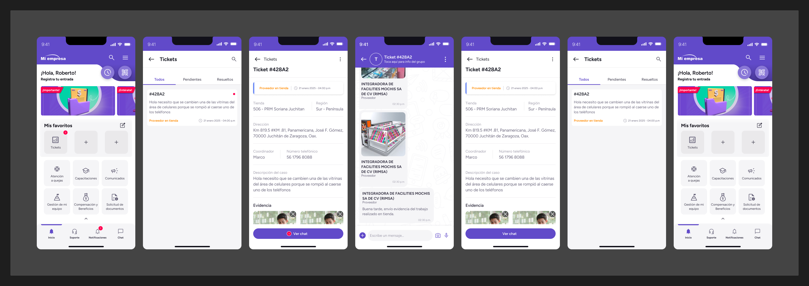
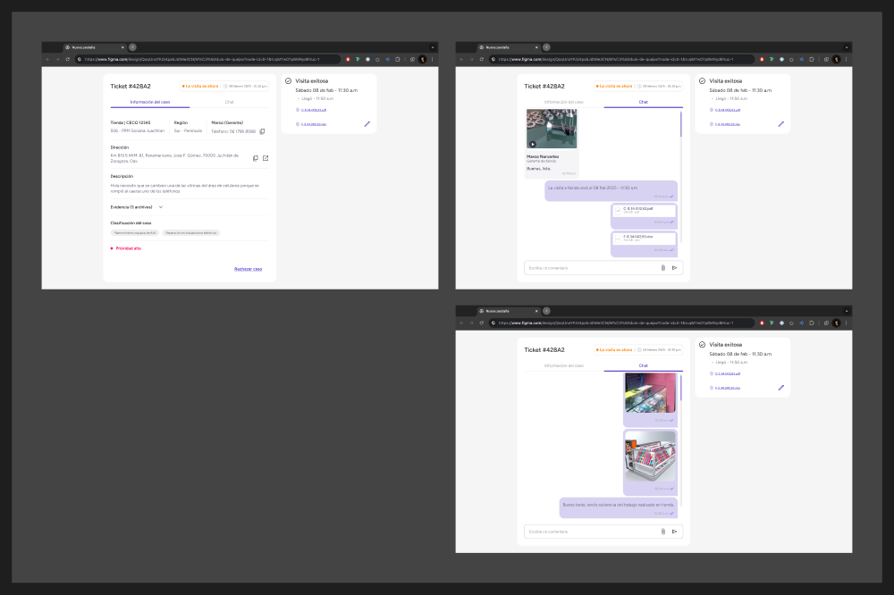
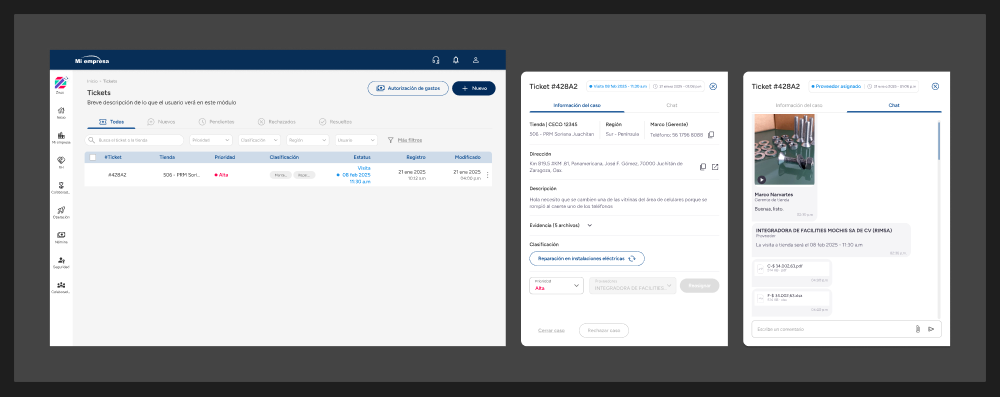

01 · Tienda
Reportar y consultar el caso
El colaborador registra la incidencia con una descripción y evidencia, y después puede consultar el estado y los siguientes pasos desde la app.
Diseñé una propuesta para coordinar incidencias de mantenimiento entre el equipo de tienda, proveedores y el equipo de gestión, desde el reporte hasta la resolución y el cierre del ticket.
La propuesta buscaba reemplazar una coordinación manual por un flujo compartido: una tienda reporta el problema con descripción y archivos; el proveedor recibe la solicitud, conversa y coordina una visita; y el equipo de gestión puede dar seguimiento a cotización y cierre.
El diseño contempló tres perfiles y sus distintas necesidades, con estados de seguimiento para que cada parte supiera qué debía ocurrir a continuación.
El caso empieza en tienda, continúa con el equipo que atiende la incidencia y se coordina desde una vista web para dar seguimiento, gestionar la visita y cerrar el servicio.

Ampliar recorrido ↗El colaborador registra la incidencia con una descripción y evidencia, y después puede consultar el estado y los siguientes pasos desde la app.

Ampliar pantalla ↗El equipo de mantenimiento recibe el contexto, acuerda la visita y comparte evidencia de la reparación dentro del caso.

Ampliar pantalla ↗La vista web permite revisar solicitudes, asignaciones, estatus y la conversación asociada para coordinar la resolución y el cierre.
Diseñé la experiencia y las pantallas del flujo junto con mi jefe, incluyendo el registro por parte de la tienda, la comunicación y coordinación con proveedores, la evidencia de reparación, los cambios de estado y la gestión web de cotizaciones y cierre.
La propuesta se trabajó con el objetivo de agilizar la coordinación sin perder trazabilidad de la incidencia.